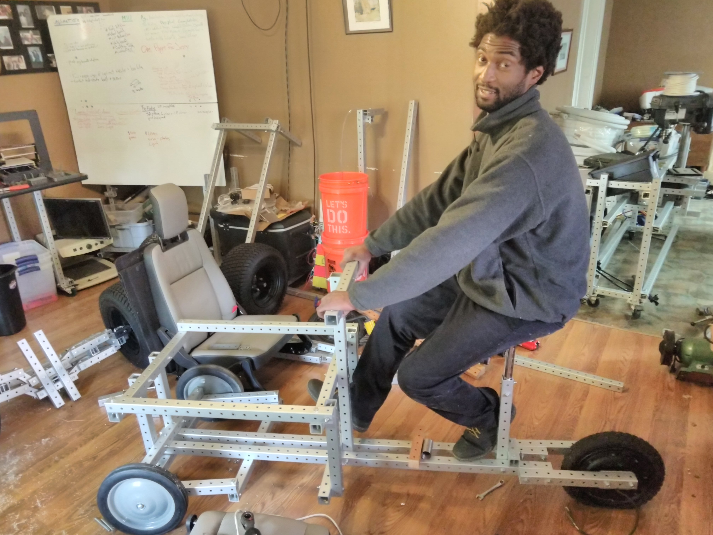
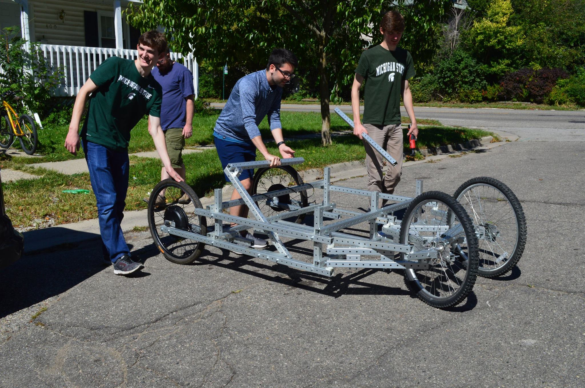
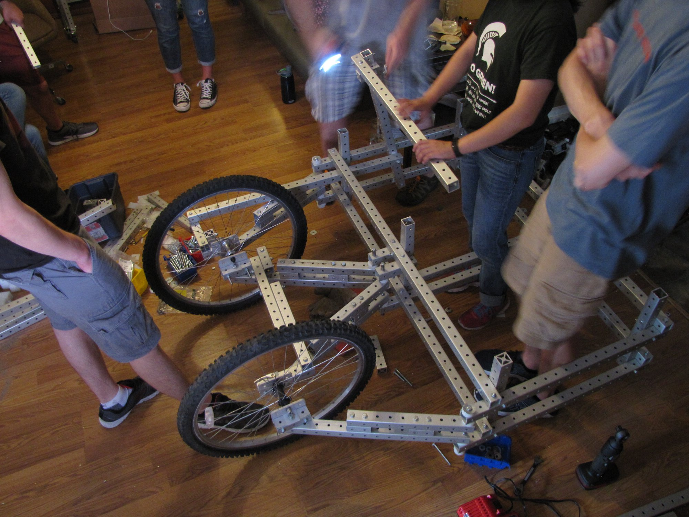
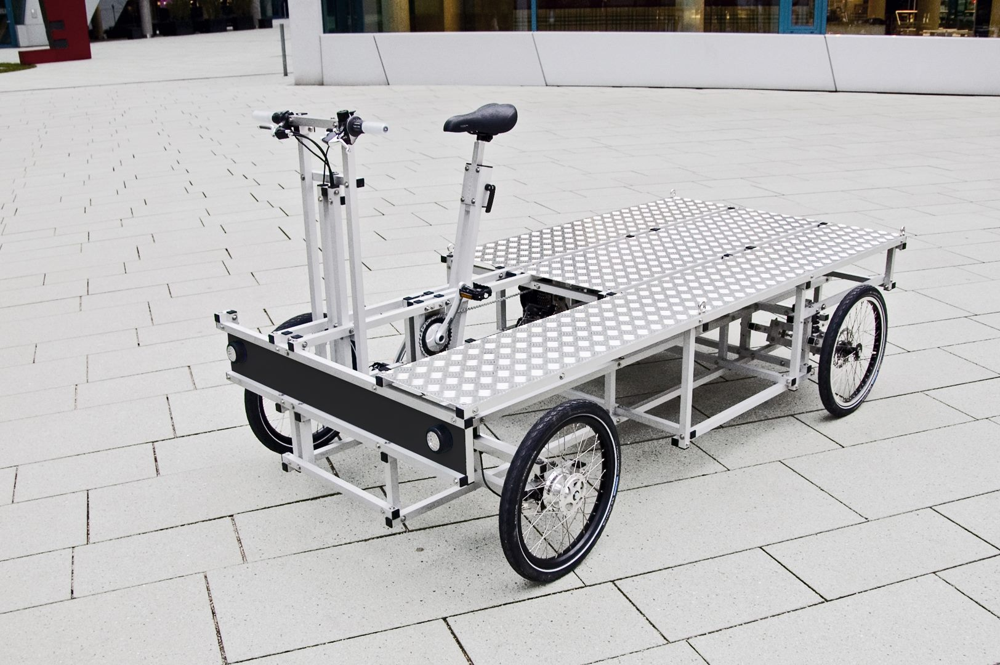

cargo cycles revision 3862
^ Projects infobox ^^
| image | Cargo cycle prototype.jpg |
| designer | |
| date | |
| tools | |
| parts | |
| stl | |
| git | |
Challenges
Licensing vehicles is difficult, complicated, and expensive.
Approaches
Bicycles (and velomobiles) usually don’t require a license. This makes them accessible to the young, differently abled, and societally disadvantaged. This velomobile carries two people plus groceries, is powered by a 1,000 Watt 48 volt wheel motor and recycled LiPo battery, and is recharged by the sun. Always ready to go, never needs to be plugged in.



Parts
{| class="wikitable"
|-
! Quantity !! Part !! Link
|-
| 1 || [[batteries|Batteries]] ||
|-
| 2 || [[motors|Motors]] ||
|-
| 2 || [[bicycle_bottom_brackets|Bicycle bottom brackets]] ||
|-
| 1 || 68mmx113mm bottom bracket - remove and store or recycle nut || [[https://www.amazon.com/gp/product/B005DTIKQE/ref=ppx_yo_dt_b_asin_title_o02_s00?ie=UTF8&psc=1&tag=replimat-20|Amazon]]
|-
| 1 || 3d printed bottom bracket holder || CAD
|-
| 1 ||[[bicycle_bottom_brackets|Bicycle bottom brackets]] ||
|-
| 4 || 100 Watt flexible solar panels || [[https://www.amazon.com/DOKIO-Semi-Flexible-Monocrystalline-Lightweight-Irregular/dp/B07VM6G4V9/ref=sr_1_8?dchild=1&keywords=flexible+solar+panels&qid=1585861757&sr=8-8&tag=replimat-20|Amazon]]
|-
| 1 || crank arm set || |
|-
| 1 || cranks || |
|-
| 1 || freewheel to axle adapter || |
|-
| 1 || [[keyed_shafts|Keyed shafts]] || |
|-
| 1 || keyed sprocket || |
|-
| 2 || [[axial_bearings|Axial bearings]] || |
|-
| 1 || wheel spindle w/ bearings, castle nut, grease cap, cotter pin || |
|-
| 1 || saddle back / seat || |
|-
| 1 || http://www.sturmey-archer.com/en/products/detail/xl-sdd || |
|-
| 1 || [[https://www.amazon.com/gp/product/B017OMTAV6/?tag=replimat-20|HQST 50 Watt 12 Volt Monocrystalline Lightweight Solar Panel for RV/Boat/Other Off Grid Applications]]|| |
|-
| 1 || [[https://www.amazon.com/RENOGY-Female-Connectors-Double-Waterproof/dp/B00H1M8ASE/?tag=replimat-20|Waterproof connectors]]|| |
|-
| 1 || [[https://www.amazon.com/gp/product/B00E8D7XYG/?tag=replimat-20|Boost Voltage Converter, DROK 600W 12A Dc Boost Voltage Converter 12-60V to 12-80V Step Up Power Supply Transformer Module Regulator Controller Constant Volt Amp]]|| |
|-
| 1 || [[https://www.amazon.com/gp/product/B00YBWA5VC/?tag=replimat-20|AW 26"x1.75" Front Wheel Electric Bicycle Motor Kit 48V 1000W Powerful Motor E-Bike Conversion w/LCD Display]]|| |
|-
| 1 || [[https://www.amazon.com/Mega-Brands-Absorber-Chinese-Scooter/dp/B015SLLQL2/?tag=replimat-20|Scooter shock absorber]]|| |
|-
| 1 || chain tensioner ||
|-
|}
Safety
- Always-on lights wired into main battery (never forget to charge or turn on)
Interoperability
Development targets
Research
- Toothed V belt pulleys, freewheel
- CVT
- Flow storage cage
- Cart part supplier
- https://attackingpixels.com/n55-recumbent-bike-aluminium/
- https://attackingpixels.com/static/n55-XYZ-Cargo-aluminium-bike1-a308cba56b1218e1777339600fdae48c-a06fa.jpg
- https://ebikebc.com/product/trolley-cargo-bike-kit/ https://ebikebc.com/product/child-cargo-ebike-add-on/
- 13-311 Electronic Fuse Block Accessory Lighting
- 1" keyed freewheel adapter and ebike parts
<youtube>jf9Kw_8vFZs</youtube>
References

- N55 XYZ Spaceframe Vehicles
- Elkinsdiy.com
- https://www.outdoorgearlab.com/biking
- pinion gearbox
- Catrikes Dumont Quad
- DryCycle: Fully enclosed electrically assisted pedal cycle
- Sunox Screecher: Solar power-assisted personal mobility device
<youtube>Ub4EP2_mAds</youtube>
<youtube>Y1ffjGgYTMM</youtube>